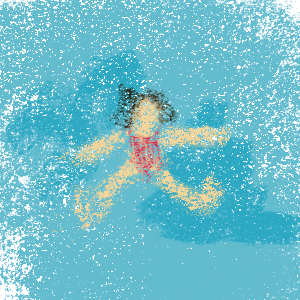
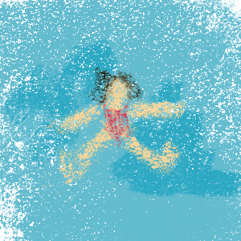
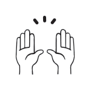
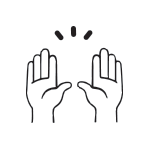

A Day in the Life of a College Student
Every ( 1 Time Span) ,
I wake up and get off my (
1 Time Span) ,
I wake up and get off my ( 2 Noun).
I don't always have time to(
2 Noun).
I don't always have time to( 3 Verb) a shower,
but I always make sure to (
3 Verb) a shower,
but I always make sure to ( 4 Verb) my hair.
Once that's done I get some (
4 Verb) my hair.
Once that's done I get some ( 5 Noun Plural or Singular),
and then it's off to my first (
5 Noun Plural or Singular),
and then it's off to my first ( 6 Noun) Class.
I often get caught (7 Verb ending in 'ing') in class.
No one likes it when the (
6 Noun) Class.
I often get caught (7 Verb ending in 'ing') in class.
No one likes it when the ( 8 Occupation) gives a surprise (
8 Occupation) gives a surprise ( 9 Noun).
My second class is (10 Noun) Theory.
Dr. (
9 Noun).
My second class is (10 Noun) Theory.
Dr. ( 11 Famous Person) is incredibly (
11 Famous Person) is incredibly ( 12 Adjective),
but I never (13 Verb) her because of her thick (
12 Adjective),
but I never (13 Verb) her because of her thick ( 14 Noun). Her (
14 Noun). Her ( 15 Noun Plural), however, are really (
15 Noun Plural), however, are really ( 16 Adjective).
After lunch, I have no more (17 Noun Plural) and I`m free to (18 Verb)(
16 Adjective).
After lunch, I have no more (17 Noun Plural) and I`m free to (18 Verb)( 19 Preposition) my friends. Before I go to bed I (
19 Preposition) my friends. Before I go to bed I ( 20 Verb) a little bit.
(
20 Verb) a little bit.
( 21 Adjective) (
21 Adjective) ( 22 Noun) (
22 Noun) ( 23 Verb) (24 Adjective).
23 Verb) (24 Adjective).
Student Gifs
- 1 Time Span
- 2 Noun
- 3 Verb
- 4 Verb
- 5 Noun Plural or Singular
- 6 Noun
- 7 Verb ending in 'ing'
- 8 Occupation
- 9 Noun
- 10 Noun
- 11 Famous Person
- 12 Adjective
- 13 Verb
- 14 Noun
- 15 Noun Plural
- 16 Adjective
- 17 Noun Plural
- 18 Verb
- 19 Preposition
- 20 Verb
- 21 Adjective
- 22 Noun
- 23 Verb
- 24 Adjective